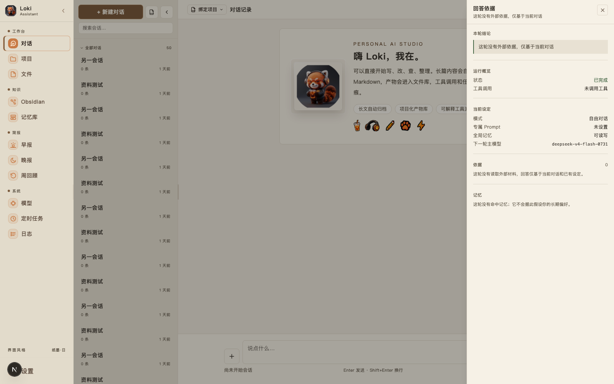
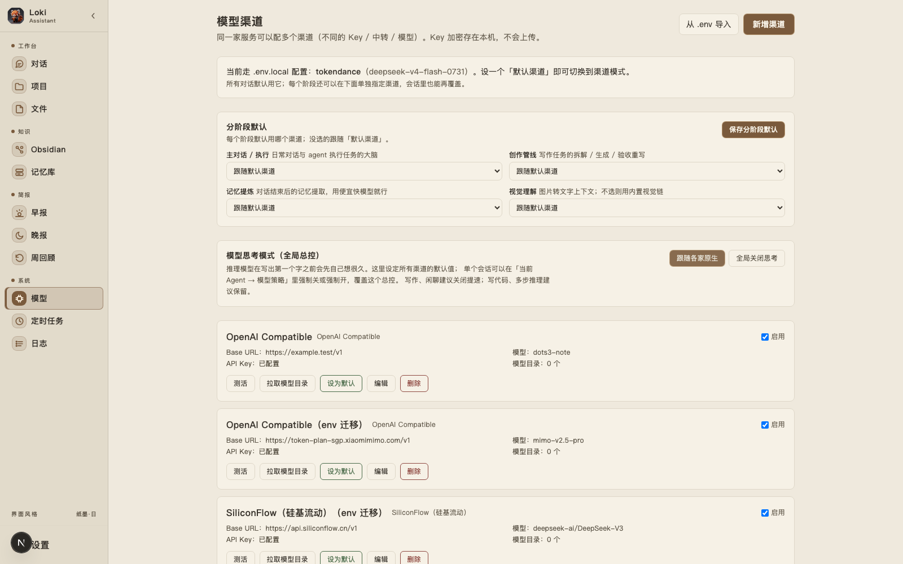

雾尼 Munin / 私有产品 / 本地优先 / 更新于 2026-09-14
Cola 记得我，Codex 也记得我，
Cola 记得我，Codex 也记得我，
可记忆怎么存、存成什么样，都归它们管。
我想要一份自己说了算的。
我给这个助手起名叫雾尼，项目里还是叫 Loki Assistant。我想看清它记了什么，让它直接找 Obsidian 里的笔记，也能知道它刚才到底调了哪个工具。模型可以换，代码暂时不开源，这里先给你看处理过私人内容的界面。
产品本身的样子，私人内容已删 · 本机 localhost

换成更强的模型也没用。真正卡住的是记忆和边界：助手得知道我上周在纠结什么，还得让这些内容留在我自己的机器上，所以记忆库我做成了可视化、可编辑的，不当黑箱。
CALL SHEET / 研发过程
先有桌面端骨架，再立 PRD
本地仓库第一条 commit 是 2026-05-23 的【全面优化：单实例 Tauri、MD 渲染、记忆反馈、搜索、时间戳等 10 项】。我当时的顺序是先跑通桌面壳，再想清楚这东西到底是什么：它是我给自己做的，以后成熟了也不排除给朋友用，但会是小规模。PRD 第一行写的就是定位：【一个真正属于 Loki 的 AI 助手。透明、可控、记住你、能干活】，里面还写明它不当套壳工具，也不做聊天机器人。私有仓库 2026-06-17 建立。
阶段一到阶段三：能跑、有记忆、接 Obsidian
按 PRD 的三个阶段往下推：先把 Next.js 框架和对话界面跑起来；再建 SQLite 记忆库，按事实、模式、历史、碎片四类分开存，对话结束以后异步提炼写入，下一次开口之前按相关性把相关的挑进 context；最后接 Obsidian，把本地 vault 里的 Markdown 整个扫一遍建索引，搜的时候能直接从笔记里捞内容。这三步的 commit 都挤在 6 月下旬到 7 月初。
从单模型走向多模型，弱模型也要兜得住
模型我不想绑死在一家，一家限流了就换备用的，别只丢给我一个报错。后来把测试渠道、拉模型列表、选默认模型也放进界面，能点就点，密钥留在本地，页面上不直接显示。
Agent Core v1：会干活，还要干得可解释
工具调用这一圈做成了 Agent Core v1：它调了哪些工具都留痕、能回看；写东西之前先把要落的目录定死，免得文件被写到我看不见的地方；同一个调用反复卡死，它就自己熔断，不再接着烧钱；嘴上说做好了不算，产物路径得先在磁盘上验过才行。之前它还干过把不知道的内容硬写进 HTML、然后大言不惭告诉我做好了这种事，这段我记着。早报、晚报、周回顾和文件库、项目容器也是这段时间长出来的，桌面端和网页端一起往前推。
REAL ARTIFACTS / 每张图只说明一件事本机真实运行，
本机真实运行，
私人内容一律不上站。
下面两张图都是本机真实运行里截的。记忆库（99 条记忆）和 Obsidian 索引（2237 篇笔记）的正文是我自己的东西，公开页不展示；对话列表里也只留没有内容的测试会话。
/providers · 渠道配置

LOCAL RUNTIME / 本机真实使用量
99记忆 318会话 676消息 2237笔记索引
MEASURED / 2026-09-14 只读实测
STATUS BOARD / 项目结果与边界
已经做到
- 阶段一到三加 Agent Core v1 都做完了：2026-05-23 到 2026-09-13 一共 273 条 commit，一直在动
- 四类记忆的自动提炼和检索我在天天用：库里 99 条记忆、318 个会话、676 条消息
- Obsidian 本地 vault 里的 2237 篇笔记做了全文索引，搜的时候直接从笔记里捞内容
- 多模型可以随时换：限流自动降级、渠道能测活、MCP 双向接入，密钥存在本地、页面不回显
能用但仍需维护
- 私有仓库、代码不开源，别人看不到实现，只能看这一页脱敏后的界面和我写的机制说明
- 对话好不好用取决于配的模型：弱模型偶尔会空产出、被限流，要靠重试和降级兜住，这套兜底我自己都还在修
- 早报、晚报、周回顾和定时任务都靠本机调度常开，机器不开，它就不会主动来找我
- Tauri 桌面端和网页端两条线一起走，两边的体验都要单独验一遍，比只做一端费事
没有证明
- 记忆库和 Obsidian 索引里是我自己的东西，公开页不放，别人也没法核里面的内容
- 我不说它【比你更懂你】这种话，这一页只说它怎么跑、我到底用了多少
- 没有公开下载，也没有在线入口，【在跑】说的是我自己每天在本机用，不是对外服务